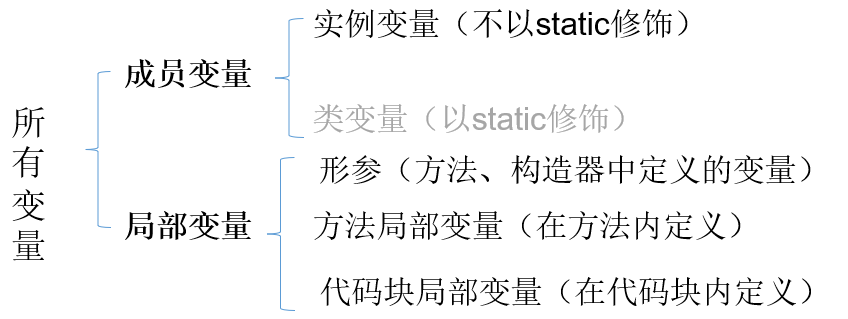
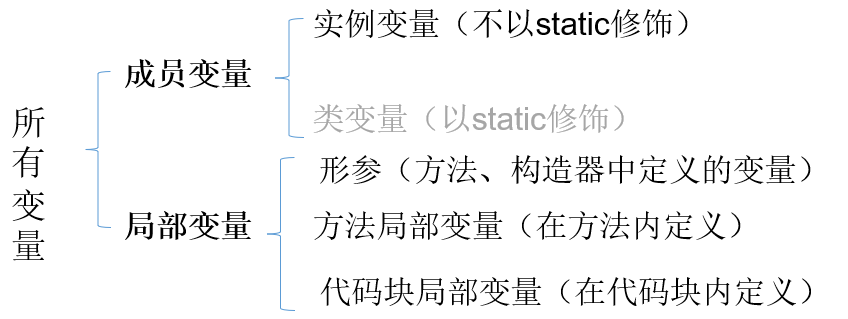

第一章 Java语言概述

1.1 JDK与JRE
- JDK (
JavaDevelopmentKit)：是Java程序开发工具包，包含JRE和开发人员使用的工具。 - **JRE ** (
JavaRuntimeEnvironment) ：是Java程序的运行时环境，包含JVM和运行时所需要的核心类库。

小结：
JDK = JRE + 开发工具集（例如Javac编译工具等）
JRE = JVM + Java SE标准类库
1.2 开发步骤
Java程序开发三步骤：编写、编译、运行。
- 将 Java 代码编写到扩展名为 .java 的源文件中
- 通过 javac.exe 命令对该 java 文件进行编译，生成一个或多个字节码文件
- 通过 java.exe 命令对生成的 class 文件进行运行

在DOS命令行中，进入D:\JavaSE\chapter01目录，使用javac 命令进行编译。
使用文件资源管理器打开D:\JavaSE\chapter01目录，然后在地址栏输入cmd。

命令：
1 | javac Java源文件名.后缀名java |
举例：
1 | javac HelloWorld.java |

编译成功后，命令行没有任何提示。打开D:\JavaSE\chapter01目录，发现产生了一个新的文件 HelloChina.class，该文件就是编译后的文件，是Java的可运行文件，称为字节码文件，有了字节码文件，就可以运行程序了。
在DOS命令行中，在字节码文件目录下，使用java 命令进行运行。
命令：
1 | java 主类名字 |
主类是指包含main方法的类，main方法是Java程序的入口：
1 | public static void main(String[] args){ |
举例：
1 | java HelloChina |

1.3 Java核心机制：JVM
JVM（Java Virtual Machine ，Java虚拟机）：是一个虚拟的计算机，是Java程序的运行环境。JVM具有指令集并使用不同的存储区域，负责执行指令，管理数据、内存、寄存器。
1.3.1 功能1：实现Java程序的跨平台性
我们编写的Java代码，都运行在JVM 之上。正是因为有了JVM，才使得Java程序具备了跨平台性。
1.3.2 功能2：自动内存管理（内存分配、内存回收）
- Java程序在运行过程中，涉及到运算的
数据的分配、存储等都由JVM来完成 - Java消除了程序员回收无用内存空间的职责。提供了一种系统级线程跟踪存储空间的分配情况，在内存空间达到相应阈值时，检查并释放可被释放的存储器空间。
- GC的自动回收，提高了内存空间的利用效率，也提高了编程人员的效率，很大程度上
减少了因为没有释放空间而导致的内存泄漏。
面试题：
Java程序还会出现内存溢出和内存泄漏问题吗？ Yes!
第二章 变量与运算符
2.1 关键字（keyword）
定义：被Java语言赋予了特殊含义，用做专门用途的字符串（或单词），全部都是小写字母。
说明：
- 关键字一共
50个，其中const和goto是保留字(reserved word)。true，false，null不在其中，它们看起来像关键字，其实是字面量，表示特殊的布尔值和空值。


2.2 标识符（identifier）
Java中变量、方法、类等要素命名时使用的字符序列，称为标识符。
技巧：凡是自己可以起名字的地方都叫标识符。
标识符的命名规则（必须遵守的硬性规定）：
1 | > 由26个英文字母大小写，0-9 ，_或 $ 组成 |
1 | > 包名：多单词组成时所有字母都小写：xxxyyyzzz。 |
2.3 变量
2.3.1 初识变量
变量的概念：
内存中的一个存储区域，该区域的数据可以在同一类型范围内不断变化
变量的构成包含三个要素：
数据类型、变量名、存储的值Java中变量声明的格式：
数据类型 变量名 = 变量值
变量的作用：用于在内存中保存数据。
使用变量注意：
- Java中每个变量必须先声明，后使用。
- 使用变量名来访问这块区域的数据。
- 变量的作用域：其定义所在的一对{ }内。
- 变量只有在其
作用域内才有效。出了作用域，变量不可以再被调用。 - 同一个作用域内，不能定义重名的变量。
2.3.2 变量类型
ava中变量的数据类型分为两大类：
基本数据类型：包括
整数类型、浮点数类型、字符类型、布尔类型。引用数据类型：包括
数组、类、接口、枚举、注解、记录。

2.3.3 变量的使用
步骤1：变量的声明
1 | 格式：数据类型 变量名; |
步骤2：变量的赋值
给变量赋值，就是把“值”存到该变量代表的内存空间中。同时，给变量赋的值类型必须与变量声明的类型一致或兼容。
1 | 变量名 = 值; |
内存结构如图：

2.4 基本数据类型（共8种一定要记住）
2.4.1 整数类型：byte、short、int、long

定义long类型的变量，赋值时需要以”
l“或”L“作为后缀。Java程序中变量通常声明为int型，除非不足以表示较大的数，才使用long。
Java的整型
常量默认为 int 型。
2.4.2 浮点类型：float、double

- float：
单精度，尾数可以精确到7位有效数字。很多情况下，精度很难满足需求。 - double：
双精度，精度是float的两倍。通常采用此类型。 - 定义float类型的变量，赋值时需要以”
f“或”F“作为后缀。 - Java 的浮点型
常量默认为double型。
2.4.2.1 关于浮点型精度的说明
并不是所有的小数都能可以精确的用二进制浮点数表示。二进制浮点数不能精确的表示0.1、0.01、0.001这样10的负次幂。
浮点类型float、double的数据不适合在
不容许舍入误差的金融计算领域。如果需要精确数字计算或保留指定位数的精度，需要使用BigDecimal类。
2.4.3 字符类型：char
char 型数据用来表示通常意义上“
字符”（占2字节）Java中的所有字符都使用Unicode编码，故一个字符可以存储一个字母，一个汉字，或其他书面语的一个字符。
字符型变量的三种表现形式：
形式1：使用单引号(‘ ‘)括起来的
单个字符。例如：char c1 = ‘a’; char c2 = ‘中’; char c3 = ‘9’;
形式2：直接使用
Unicode值来表示字符型常量：‘\uXXXX’。其中，XXXX代表一个十六进制整数。例如：\u0023 表示 ‘#’。
形式3：Java中还允许使用
转义字符‘\’来将其后的字符转变为特殊字符型常量。例如：char c3 = ‘\n’; // ‘\n’表示换行符
| 转义字符 | 说明 | Unicode表示方式 |
|---|---|---|
\n |
换行符 | \u000a |
\t |
制表符 | \u0009 |
\" |
双引号 | \u0022 |
\' |
单引号 | \u0027 |
\\ |
反斜线 | \u005c |
\b |
退格符 | \u0008 |
\r |
回车符 | \u000d |
- char类型是可以进行运算的。因为它都对应有Unicode码，可以看做是一个数值。
2.4.4 布尔类型：boolean
boolean 类型用来判断逻辑条件，一般用于流程控制语句中：
- if条件控制语句；
- while循环控制语句；
- for循环控制语句；
- do-while循环控制语句；
boolean类型数据只有两个值：true、false，无其它。
- 不可以使用0或非 0 的整数替代false和true，这点和C语言不同。
- 拓展：Java虚拟机中没有任何供boolean值专用的字节码指令，Java语言表达所操作的boolean值，在编译之后都使用java虚拟机中的int数据类型来代替：true用1表示，false用0表示。——《java虚拟机规范 8版》
经验之谈：
Less is More！建议不要这样写：if ( isFlag = = true )，只有新手才如此。关键也很容易写错成if(isFlag = true)，这样就变成赋值isFlag为true而不是判断！
老鸟的写法是if (isFlag)或者if ( !isFlag)。
2.5 基本数据类型变量间的运算规则
在Java程序中，不同的基本数据类型（只有7种，不包含boolean类型）变量的值经常需要进行相互转换。
转换的方式有两种：自动类型提升和强制类型转换。
2.5.1 自动类型提升
规则：将取值范围小（或容量小）的类型自动提升为取值范围大（或容量大）的类型 。
基本数据类型的转换规则如图所示：

（1）当把存储范围小的值（常量值、变量的值、表达式计算的结果值）赋值给了存储范围大的变量时
1 | int i = 'A';//char自动升级为int，其实就是把字符的编码值赋值给i变量了 |
（2）当存储范围小的数据类型与存储范围大的数据类型变量一起混合运算时，会按照其中最大的类型运算。
1 | int i = 1; |
（3）当byte,short,char数据类型的变量进行算术运算时，按照int类型处理。
1 | byte b1 = 1; |
2.5.2 强制类型转换
规则：将取值范围大（或容量大）的类型强制转换成取值范围小（或容量小）的类型。
自动类型提升是Java自动执行的，而强制类型转换是自动类型提升的逆运算，需要我们自己手动执行。
转换格式：
1 | 数据类型1 变量名 = (数据类型1)被强转数据值; //()中的数据类型必须<=变量值的数据类型 |
（1）当把存储范围大的值（常量值、变量的值、表达式计算的结果值）强制转换为存储范围小的变量时，可能会损失精度或溢出。
1 | int i = (int)3.14;//损失精度 |
（2）当某个值想要提升数据类型时，也可以使用强制类型转换。这种情况的强制类型转换是没有风险的，通常省略。
1 | int i = 1; |
（3）声明long类型变量时，可以出现省略后缀的情况。float则不同。
1 | long l1 = 123L; |
2.5.3 基本数据类型与String的运算
2.5.3.1 字符串类型：String
- String不是基本数据类型，属于引用数据类型
- 使用一对
""来表示一个字符串，内部可以包含0个、1个或多个字符。 - 声明方式与基本数据类型类似。例如：String str = “尚硅谷”;
2.5.3.2 运算规则
1、任意八种基本数据类型的数据与String类型只能进行连接“+”运算，且结果一定也是String类型
1 | System.out.println("" + 1 + 2);//12 |
2、String类型不能通过强制类型()转换，转为其他的类型
1 | String str = "123"; |
2.6 运算符（Operator）
运算符是一种特殊的符号，用以表示数据的运算、赋值和比较等。
运算符的分类：
- 按照
功能分为：算术运算符、赋值运算符、比较(或关系)运算符、逻辑运算符、位运算符、条件运算符、Lambda运算符
| 分类 | 运算符 |
|---|---|
| 算术运算符（7个） | +、-、*、/、%、++、– |
| 赋值运算符（12个） | =、+=、-=、*=、/=、%=、>>=、<<=、>>>=、&=、|=、^=等 |
| 比较(或关系)运算符（6个） | >、>=、<、<=、==、!= |
| 逻辑运算符（6个） | &、|、^、!、&&、|| |
| 位运算符（7个） | &、|、^、~、<<、>>、>>> |
| 条件运算符（1个） | (条件表达式)?结果1:结果2 |
| Lambda运算符（1个） | ->（第18章时讲解） |
- 按照
操作数个数分为：一元运算符（单目运算符）、二元运算符（双目运算符）、三元运算符 （三目运算符）
| 分类 | 运算符 |
|---|---|
| 一元运算符（单目运算符） | 正号（+）、负号（-）、++、–、!、~ |
| 二元运算符（双目运算符） | 除了一元和三元运算符剩下的都是二元运算符 |
| 三元运算符 （三目运算符） | (条件表达式)?结果1:结果2 |
举例1：“+”号的两种用法
- 第一种：对于
+两边都是数值的话，+就是加法的意思 - 第二种：对于
+两边至少有一边是字符串的话，+就是拼接的意思
举例2：自加自减运算
理解：++ 运算，表示自增1。同理，-- 运算，表示自减1，用法与++ 一致。
1、单独使用
- 变量在单独运算的时候，变量
前++和变量后++，是没有区别的。 - 变量
前++：例如++a。 - 变量
后++：例如a++。
2、复合使用
- 和
其他变量放在一起使用或者和输出语句放在一起使用，前++和后++就产生了不同。
- 变量
前++：变量先自增1，然后再运算。 - 变量
后++：变量先运算，然后再自增1。
1 | int i = 2; |
逻辑运算符，操作的都是boolean类型的变量或常量，而且运算得结果也是boolean类型的值。
运算符说明：
- & 和 &&：表示”且”关系，当符号左右两边布尔值都是true时，结果才能为true。否则，为false。
- | 和 || ：表示”或”关系，当符号两边布尔值有一边为true时，结果为true。当两边都为false时，结果为false
- ! ：表示”非”关系，当变量布尔值为true时，结果为false。当变量布尔值为false时，结果为true。
- ^ ：当符号左右两边布尔值不同时，结果为true。当两边布尔值相同时，结果为false。
- 理解：
异或，追求的是“异”！
- 理解：
逻辑运算符用于连接布尔型表达式，在Java中不可以写成 3 < x < 6，应该写成x > 3 & x < 6 。
区分“&”和“&&”：
相同点：如果符号左边是true，则二者都执行符号右边的操作
不同点：& ： 如果符号左边是false,则继续执行符号右边的操作
&& ：如果符号左边是false,则不再继续执行符号右边的操作
- 建议：开发中，推荐使用 &&
区分“|”和“||”：
相同点：如果符号左边是false，则二者都执行符号右边的操作
不同点：| ： 如果符号左边是true，则继续执行符号右边的操作
|| ：如果符号左边是true，则不再继续执行符号右边的操作
建议：开发中，推荐使用 ||
第三章 流程控制语句
3.1 分支语句
3.1.1 if-else条件判断结构
1 | //结构1：单分支条件判断：if |
3.1.2 switch-case选择结构
1 | switch(表达式){ |
执行过程：
第1步：根据switch中表达式的值，依次匹配各个case。如果表达式的值等于某个case中的常量值，则执行对应case中的执行语句。
第2步：执行完此case的执行语句以后，
情况1：如果遇到break,则执行break并跳出当前的switch-case结构
情况2：如果没有遇到break，则会继续执行当前case之后的其它case中的执行语句。—>case穿透
…
直到遇到break关键字或执行完所有的case及default的执行语句，跳出当前的switch-case结构
使用注意点：
switch(表达式)中表达式的值必须是下述几种类型之一：byte，short，char，int，枚举 (jdk 5.0)，String (jdk 7.0)；
case子句中的值必须是常量，不能是变量名或不确定的表达式值或范围；
同一个switch语句，所有case子句中的常量值互不相同；
break语句用来在执行完一个case分支后使程序跳出switch语句块；
如果没有break，程序会顺序执行到switch结尾；
default子句是可选的。同时，位置也是灵活的。当没有匹配的case时，执行default语句。
结论：凡是使用switch-case的结构都可以转换为if-else结构。反之，不成立。
开发经验：如果既可以使用switch-case，又可以使用if-else，建议使用switch-case。因为效率稍高。
细节对比：
- if-else语句优势
- if语句的条件是一个布尔类型值，if条件表达式为true则进入分支，可以用于范围的判断，也可以用于等值的判断，
使用范围更广。 - switch语句的条件是一个常量值（byte,short,int,char,枚举,String），只能判断某个变量或表达式的结果是否等于某个常量值，
使用场景较狭窄。
- if语句的条件是一个布尔类型值，if条件表达式为true则进入分支，可以用于范围的判断，也可以用于等值的判断，
- switch语句优势
- 当条件是判断某个变量或表达式是否等于某个固定的常量值时，使用if和switch都可以，习惯上使用switch更多。因为
效率稍高。当条件是区间范围的判断时，只能使用if语句。 - 使用switch可以利用
穿透性，同时执行多个分支，而if…else没有穿透性。
- 当条件是判断某个变量或表达式是否等于某个固定的常量值时，使用if和switch都可以，习惯上使用switch更多。因为
- if-else语句优势
3.2 循环语句
理解：循环语句具有在
某些条件满足的情况下，反复执行特定代码的功能。循环结构分类：
- for 循环
- while 循环
- do-while 循环
循环结构
四要素：- 初始化部分
- 循环条件部分
- 循环体部分
- 迭代部分
3.2.1 for循环
1 | for (①初始化部分; ②循环条件部分; ④迭代部分)｛ |
执行过程：①-②-③-④-②-③-④-②-③-④-…..-②
说明：
- for(;;)中的两个；不能多也不能少
- ①初始化部分可以声明多个变量，但必须是同一个类型，用逗号分隔
- ②循环条件部分为boolean类型表达式，当值为false时，退出循环
- ④可以有多个变量更新，用逗号分隔
3.2.2 while循环
1 | ①初始化部分 |
执行过程：①-②-③-④-②-③-④-②-③-④-…-②
说明：
- while(循环条件)中循环条件必须是boolean类型。
- 注意不要忘记声明④迭代部分。否则，循环将不能结束，变成死循环。
- for循环和while循环可以相互转换。二者没有性能上的差别。实际开发中，根据具体结构的情况，选择哪个格式更合适、美观。
- for循环与while循环的区别：初始化条件部分的作用域不同。
3.2.3 do-while循环
1 | ①初始化部分; |
执行过程：①-③-④-②-③-④-②-③-④-…-②
说明：
- 结尾while(循环条件)中循环条件必须是boolean类型
- do{}while();最后有一个分号
- do-while结构的循环体语句是至少会执行一次，这个和for和while是不一样的
- 循环的三个结构for、while、do-while三者是可以相互转换的。
3.2.4 对比三种循环结构
- 三种循环结构都具有四个要素：
- 循环变量的初始化条件
- 循环条件
- 循环体语句块
- 循环变量的修改的迭代表达式
- 从循环次数角度分析
- do-while循环至少执行一次循环体语句。
- for和while循环先判断循环条件语句是否成立，然后决定是否执行循环体。
- 如何选择
- 遍历有明显的循环次数（范围）的需求，选择for循环
- 遍历没有明显的循环次数（范围）的需求，选择while循环
- 如果循环体语句块至少执行一次，可以考虑使用do-while循环
- 本质上：三种循环之间完全可以互相转换，都能实现循环的功能
3.2.5 无限循环
语法格式：
- 最简单”无限”循环格式：
while(true),for(;;)
适用场景：
- 开发中，有时并不确定需要循环多少次，需要根据循环体内部某些条件，来控制循环的结束（使用break）。
- 如果此循环结构不能终止，则构成了死循环！开发中要避免出现死循环。
3.3 关键字break和continue的使用
1 | 适用范围 在循环结构中使用的作用 相同点 |
此外，很多语言都有goto语句，goto语句可以随意将控制转移到程序中的任意一条语句上，然后执行它，但使程序容易出错。Java中的break和continue是不同于goto的。
3.4 Scanner：键盘输入功能的实现
如何从键盘获取不同类型（基本数据类型、String类型）的变量：使用Scanner类。
键盘输入代码的四个步骤：
- 导包：
import java.util.Scanner; - 创建Scanner类型的对象：
Scanner scan = new Scanner(System.in); - 调用Scanner类的相关方法（
next() / nextXxx()），来获取指定类型的变量 - 释放资源：
scan.close();
- 导包：
注意：需要根据相应的方法，来输入指定类型的值。如果输入的数据类型与要求的类型不匹配时，会报异常 导致程序终止。
1 | //① 导包 |
3.5 如何获取一个随机数
如何产生一个指定范围的随机整数？
1、Math类的random()的调用，会返回一个[0,1)范围的一个double型值
2、Math.random() * 100 —> [0,100)
(int)(Math.random() * 100) —> [0,99]
(int)(Math.random() * 100) + 5 —-> [5,104]
3、如何获取[a,b]范围内的随机整数呢？(int)(Math.random() * (b - a + 1)) + a
4、举例
1 | class MathRandomTest { |
第四章 IDEA的安装与使用
4.1 JDK相关设置
File-->Project Structure...-->Platform Settings -->SDKs
SDKs全称是Software Development Kit ，这里一定是选择JDK的安装根目录。这里还可以从本地添加多个JDK。使用“+”即可实现。
out目录和编译版本
File-->Project Structure...-->Project Settings -->Project
4.2 工程与模块管理
project(工程) - module(模块) - package(包) - class(类)
一个project中可以创建多个module
一个module中可以创建多个package
一个package中可以创建多个class
在 IntelliJ IDEA 中Project是最顶级的结构单元，然后就是Module。目前，主流的大型项目结构基本都是多Module的结构，这类项目一般是按功能划分的，比如：user-core-module、user-facade-module和user-hessian-module等等，模块之间彼此可以相互依赖，有着不可分割的业务关系。因此，对于一个Project来说：
- 当为单Module项目的时候，这个单独的Module实际上就是一个Project。
- 当为多Module项目的时候，多个模块处于同一个Project之中，此时彼此之间具有
互相依赖的关联关系。 - 当然多个模块没有建立依赖关系的话，也可以作为单独一个“小项目”运行。
IDEA快捷键
1. 搜索窗口：
ctrl + shift + a
第五章 数组
数组往往脱离具体的语言而存在
5.1 数组的概念
数组(Array)，是多个相同类型数据按一定顺序排列的集合，并使用一个名字命名，并通过编号的方式对这些数据进行统一管理。
数组中的概念
- 数组名
- 下标（或索引）
- 元素
- 数组的长度

Java中的容器：数组、集合框架（第12章）：在内存中对多个数据的存储。
5.2 数组的几个相关概念
数组名
数组的元素（即内部存储的多个元素）
数组的下标、角标、下角标、索引、index(即找到指定数组元素所使用的编号)
数组的长度(即数组容器中存储的元素的个数)
5.3 数组的特点
数组中的元素在内存中是依次紧密排列的，有序的。
数组，属于引用数据类型的变量。数组的元素，既可以是基本数据类型，也可以引用数据类型。
数组，一旦初始化完成，其长度就确定了,并且其长度不可更改。
创建数组对象会在内存中开辟一整块连续的空间。占据的空间的大小，取决于数组的长度和数组中元素的类型。
5.4 数组的分类
前置复习：
- 基本数据类型（8种要记住）：byte \ short \ int \ long ;float \ double ; char \ boolean
- 引用数据类型：类、数组、接口、枚举、注解、记录
按照元素的类型：基本数据类型元素的数组；引用数据类型元素的数组
按照数组的维数来分：一维数组；二维数组；…..
5.5 一维数组的使用
5.5.1 数组的声明和初始化
1 | //复习：变量的定义格式：数据类型 变量名 = 变量值 |
1 | //简而言之 |
5.5.2 调用数组的指定元素
1 | //通过角标的方式，获取数组的元素，角标范围0~数组长度-1 |
5.5.3 数组的属性length
1 | //数组的长度:用来描述数组容器中容量的大小 |
5.5.4 数组的遍历
两种方法均可，个人习惯后者
1 | for (int i = 0; i < prices.length; i++) { |
5.5.5 数组元素的默认初始化值
整型数组元素的默认初始化值：0
浮点型数组元素的默认初始化值：0.0
字符型数组元素的默认初始化值：0 (或理解为’\u0000’)，表示为字符0，即’0’
boolean型数组元素的默认初始化值：false
引用数据类型数组元素的默认初始化值：null
1 | String[] arr6 = new String[5];//引用数据类型 |
5.5.6 一维数组的内存解析

java中的内存结构是如何划分的（主要关心JVM的运行时内存环境）
将内存区域划分为5个部分：程序计数器、虚拟机栈、本地方法栈、堆、方法区
| 区域名称 | 作用 |
|---|---|
虚拟机栈 |
用于存储正在执行的每个Java方法的局部变量表等。局部变量表存放了编译期可知长度 的各种基本数据类型、对象引用，方法执行完，自动释放。 |
堆内存 |
存储对象（包括数组对象），new来创建的，都存储在堆内存。 |
方法区 |
存储已被虚拟机加载的类信息、常量、（静态变量）、即时编译器编译后的代码等数据。 |
| 本地方法栈 | 当程序中调用了native的本地方法时，本地方法执行期间的内存区域 |
| 程序计数器 | 程序计数器是CPU中的寄存器，它包含每一个线程下一条要执行的指令的地址 |
与目前数组相关的内存结构：
1 | int[] arr = new int[]{1,2,3}; |
- 虚拟机栈：用于存放方法中声明的局部变量。比如arr
- 堆：用于存放数组的实体（即数组中的所有元素）。比如1,2,3

注意：后续要介绍，实际上”周杰伦”是存储在字符串常量池中的。

1 | int[] a1 = new int[]{1,2,3}; |
5.6 二维数组的使用
对于二维数组的理解，可以看成是一维数组array1又作为另一个一维数组array2的元素而存在。其实，从数组底层的运行机制来看，其实没有多维数组。
概念：数组的外层元素；数组的内层元素
5.6.1 二维数组的声明和初始化
1 | //方式1：静态初始化 |
5.6.2 调用二维数组的指定元素
1 | //调用内层元素 |
5.6.3 二维数组的属性length
1 | System.out.println(arr2.length);//3 |
5.6.4 二维数组的遍历（记住）
1 | //int[][] arr2 = new int[][]{{1,2,3},{2,4},{5,6}}; |
5.6.5 二维数组元素的默认初始化值
1 | 动态初始化方式1：(比如：int[][] arr = new int[3][4]) |
1 | int[][] arr1 = new int[3][2]; |
1 | int[][] arr4 = new int[4][]; |
5.6.6 二维数组的内存解析


5.7 数组中的常见算法
5.7.1 数组本身的一些操作
数值型数组特征值统计
这里的特征值涉及到：平均值、最大值、最小值、总和等
1 | public class ArrayExer01 { |
数组元素的赋值（实际开发中，遇到的场景比较多）
1 | /** |
数组的复制
1 | //创建快捷方式，对快捷方式的修改会影响到原数组 |

1 | public class ArrayExer04_1 { |

数组的反转
1 | public class ArrayExer05 { |
5.7.2 数组扩缩容、查找与排序
数据的扩容与缩容
数组一旦初始化长度就是确定的，所以数组扩容必须重建，以后集合的扩容也是这个原理，先重建，再赋值，最后让指针重新指向
1 | /** |
如之前所说，数组一旦初始化，长度就是确定的不能更改，想缩容必须重建一个数组。另外一种数组的”缩容“，就是删除一个元素后，将后面的元素依次前移
1 | /** |
数组元素的查找
线性查找
优点：算法简单；
缺点：执行效率低。执行的时间复杂度O(N)
1 | public class LinearSearchTest { |
二分查找
优点：执行效率高。执行的时间复杂度O(logN)
缺点：算法相较于顺序查找难一点；前提：数组必须有序
1 | public static void main(String[] args) { |
数组元素的排序

冒泡排序
时间复杂度：O(n^2)
1 | public class BubbleSort { |
快速排序
最快的，开发中默认选择的排序方式；掌握快速排序的实现思路；时间复杂度：O(nlogn)
1 | public class QuickSort { |
性能比较
- 从平均时间而言：快速排序最佳。但在最坏情况下时间性能不如堆排序和归并排序。
- 从算法简单性看：由于直接选择排序、直接插入排序和冒泡排序的算法比较简单，将其认为是简单算法。对于Shell排序、堆排序、快速排序和归并排序算法，其算法比较复杂，认为是复杂排序。
- 从稳定性看：直接插入排序、冒泡排序和归并排序时稳定的；而直接选择排序、快速排序、 Shell排序和堆排序是不稳定排序
- 从待排序的记录数n的大小看，n较小时，宜采用简单排序；而n较大时宜采用改进排序。
选择
- 若n较小(如n≤50)，可采用直接插入或直接选择排序。
当记录规模较小时，直接插入排序较好；否则因为直接选择移动的记录数少于直接插入，应选直接选择排序为宜。 - 若文件初始状态基本有序(指正序)，则应选用直接插入、冒泡或随机的快速排序为宜；
- 若n较大，则应采用时间复杂度为O(nlgn)的排序方法：快速排序、堆排序或归并排序。
- 若n较小(如n≤50)，可采用直接插入或直接选择排序。
5.8 Arrays工具类（专门操作数组）
处在java.util包下
java.util.Arrays类即为操作数组的工具类，包含了用来操作数组（比如排序和搜索）的各种方法。具体API操作可查看文档
1 | public class ArraysTest { |
第六章 面向对象编程（基础）
面向对象内容的三条主线：
- Java类及类的成员：（重点）属性、方法、构造器；（熟悉）代码块、内部类
- 面向对象的特征：封装、继承、多态、（抽象）
- 其他关键字的使用：this、super、package、import、static、final、interface、abstract等
6.1 面向对象编程的概述
面向过程：
- 以函数为组织单位。
- 是一种“执行者思维”，适合解决简单问题。扩展能力差、后期维护难度较大。
面向对象：
- 以类为组织单位。每种事物都具备自己的属性和行为/功能。
- 是一种“设计者思维”，适合解决复杂问题。代码扩展性强、可维护性高。
面向对象和面向过程的关系：
我们千万不要把面向过程和面向对象对立起来。他们是相辅相成的。面向对象离不开面向过程！
6.2 Java语言的基本元素——类和对象
6.2.1 类和对象的概述
类:具有相同特征的事物的抽象描述，是抽象的、概念上的定义。
对象：实际存在的该类事物的每个个体，是具体的，因而也称为实例(instance)。
6.2.2 类的成员概述
设计类，就是设计类的成员
成员之一：属性、成员变量、field（字段、域）
成员之二：（成员）方法、函数、method
6.2.3 面向对象完成功能的三步骤
步骤1：创建类，并设计类的内部成员（属性、方法）
步骤2：创建类的对象。比如：Phone p1 = new Phone();
步骤3：通过对象，调用其内部声明的属性或方法，完成相关的功能
1 | //步骤1：创建类 |
1 | //步骤2：类的实例化 |
我们也可以不定义对象的句柄，而直接调用这个对象的方法。这样的对象叫做匿名对象。
- 如：new Phone().call();
使用情况：
- 如果一个对象只需要进行一次方法调用，那么就可以使用匿名对象。
- 我们经常将匿名对象作为实参传递给一个方法调用。
6.3 对象的内存解析
对象在内存中的分配涉及到的内存结构（理论）
- 栈(stack): 方法内定义的变量，存储在栈中。
- 堆(heap) : new 出来的结构（比如：数组实体、对象的实体）。包括对象中的属性
- 方法区(method area) : 存放类的模板。比如：Person类的模板
1 | public class Person { |
1 | public class PersonTest { |


1 | //强调1：创建了Person类的两个对象 |
6.4 类的成员之一：成员变量(field)
变量的分类：
- 角度一：按照数据类型来分：基本数据类型（8种）、引用数据类型（数组、类、接口、枚举、注解、记录）
- 角度二：按照变量在类中声明的位置的不同：成员变量（或属性）、局部变量（方法内、方法形参、构造器内、构造器形参、代码块内等）
 

注意：不由static修饰的成员变量叫实例变量，每一个对象都有一份；由static修饰的成员变量叫类变量，所有对象共用一个
区分成员变量 vs 局部变量
相同点：
变量声明的格式相同：数据类型 变量名 = 变量值
变量都有其有效的作用域。出了作用域，就失效了。
变量必须先声明，后赋值，再使用。
不同点：
① 类中声明的位置的不同：
属性：声明在类内，方法外的变量
局部变量：声明方法、构造器内部的变量
② 在内存中分配的位置不同（难）：
属性：随着对象的创建，存储在堆空间中。
局部变量：存储在栈空间中
③ 生命周期：
属性：随着对象的创建而创建，随着对象的消亡而消亡。
局部变量：随着方法对应的栈帧入栈，局部变量会在栈中分配；随着方法对应的栈帧出栈，局部变量消亡。
④ 作用域：
属性：在整个类的内部都是有效的
局部变量：仅限于声明此局部变量所在的方法（或构造器、代码块）中
⑤ 是否可以有权限修饰符进行修饰：(难)
都有哪些权限修饰符：public、protected、缺省、private。（用于表明所修饰的结构可调用的范围的大小）
属性，是可以使用权限修饰符进行修饰的。 暂时还未讲封装性，所以大家先不用写任何权限符。
而局部变量，不能使用任何权限修饰符进行修饰的。
⑥ 是否有默认值：(重点)
属性:都有默认初始化值意味着，如果没有给属性进行显式初始化赋值，则会有默认初始化值。当一个对象被创建时，会对其中各种类型的成员变量自动进行初始化赋值。
局部变量：都没有默认初始化值。意味着，在使用局部变量之前，必须要显式的赋值，否则报错。
注意：对于方法的形参而言，在调用方法时，给此形参赋值即可。

类中有类的情况：
1 | public class MyDate { |

6.5 类的成员之二：方法(method)
6.5.1 方法的理解
方法是类或对象行为特征的抽象，用来完成某个功能操作。在某些语言中也称为函数或过程。将功能封装为方法的目的是，可以
实现代码重用，减少冗余，简化代码Java里的方法
不能独立存在，所有的方法必须定义在类里。举例1：
- Math.random()的random()方法
- Math.sqrt(x)的sqrt(x)方法
- System.out.println(x)的println(x)方法
- new Scanner(System.in).nextInt()的nextInt()方法
- Arrays类中的binarySearch()方法、sort()方法、equals()方法
6.5.2 方法的声明
1、声明方法的语法格式
1 | [修饰符] 返回值类型 方法名([形参列表])[throws 异常列表]{ |
（1）一个完整的方法 = 方法头 + 方法体。
- 方法头就是
[修饰符] 返回值类型 方法名([形参列表])[throws 异常列表]，也称为方法签名。通常调用方法时只需要关注方法头就可以，从方法头可以看出这个方法的功能和调用格式。 - 方法体就是方法被调用后要执行的代码。对于调用者来说，不了解方法体如何实现的，并不影响方法的使用。
（2）方法头可能包含5个部分
修饰符：可选的。方法的修饰符也有很多，例如：public、protected、private、static、abstract、native、final、synchronized等，后面会一一学习。
- 其中，权限修饰符有public、protected、private。在讲封装性之前，我们先默认使用pulbic修饰方法。
- 其中，根据是否有static，可以将方法分为静态方法和非静态方法。其中静态方法又称为类方法，非静态方法又称为实例方法。咱们在讲static前先学习实例方法。
返回值类型： 表示方法运行的结果的数据类型，方法执行后将结果返回到调用者。
- 无返回值，则声明：void
- 有返回值，则声明出返回值类型（可以是任意类型）。与方法体中“
return 返回值”搭配使用
方法名：属于标识符，命名时遵循标识符命名规则和规范，“见名知意”
形参列表：表示完成方法体功能时需要外部提供的数据列表。可以包含零个，一个或多个参数。
- 无论是否有参数，()不能省略
- 如果有参数，每一个参数都要指定数据类型和参数名，多个参数之间使用逗号分隔，例如：
- 一个参数： (数据类型 参数名)
- 二个参数： (数据类型1 参数1, 数据类型2 参数2)
- 参数的类型可以是基本数据类型、引用数据类型
throws 异常列表：可选，在【第09章-异常处理】章节再讲
（3）方法体：方法体必须有{}括起来，在{}中编写完成方法功能的代码
Java里的方法
不能独立存在，所有的方法必须定义在类里。
Java中的方法不调用，不执行。每调用一次，就执行一次。
方法内可以调用本类中的(其它)方法或属性
方法内不能定义方法。
（4）关于方法体中return语句的说明：
return语句的作用是结束方法的执行，并将方法的结果返回去
如果返回值类型不是void，方法体中必须保证一定有 return 返回值; 语句，并且要求该返回值结果的类型与声明的返回值类型一致或兼容。
如果返回值类型为void时，方法体中可以没有return语句，如果要用return语句提前结束方法的执行，那么return后面不能跟返回值，直接写return ; 就可以。
return语句后面就不能再写其他代码了，否则会报错：Unreachable code
补充：方法的分类：按照是否有形参及返回值

1 | public class MethodTest { |
6.5.3 方法调用的内存解析
方法
没有被调用的时候，都在方法区中的字节码文件(.class)中存储。方法
被调用的时候，需要进入到栈内存中运行。方法每调用一次就会在栈中有一个入栈动作，即给当前方法开辟一块独立的内存区域，用于存储当前方法的局部变量的值。当方法执行结束后，会释放该内存，称为
出栈，如果方法有返回值，就会把结果返回调用处，如果没有返回值，就直接结束，回到调用处继续执行下一条指令。栈结构：先进后出，后进先出。

注意：interests()方法的调用者是mian()，interests()方法出栈后，main()方法接收到了interests()方法的返回值
6.5.4 小练习
1 | /** |
1 | public class MyArraysTest { |
6.6 对象数组
数组的元素可以是基本数据类型，也可以是引用数据类型。当元素是引用类型中的类时，我们称为对象数组。
直接看例子：
1 | public class Student { |

6.7 再谈方法（重难点）
6.7.1 方法的重载（overload）
定义：在同一个类中，允许存在一个以上的同名方法，只要它们的参数列表不同即可。满足这样特征的多个方法，彼此之间构成方法的重载。
总结为：“两同一不同”
两同：同一个类、相同的方法名
一不同：参数列表不同。① 参数个数不同 ② 参数类型不同注意：方法的重载与形参的名、权限修饰符、返回值类型都没有关系。
如何判断两个方法是相同的呢？ 方法名相同，且形参列表相同。（形参列表相同指的是参数个数和类型都相同，与形参名没关系）
编译器是如何确定调用的某个具体的方法呢？先通过方法名确定了一波重载的方法，进而通过不同的形参列表，确定具体的某一个方法。
在同一个类中不允许定义两个相同的方法。
1 | public class OverloadTest { |
一道面试题
1 | public class InterviewTest { |
出现上述的原因是因为调用的是不同的println()方法
6.7.2 可变个数的形参
在**JDK 5.0 中提供了Varargs(variable number of arguments)**机制。即当定义一个方法时，形参的类型可以确定，但是形参的个数不确定，那么可以考虑使用可变个数的形参。
1 | 方法名(参数的类型名 ...参数名) |
1 | public class ArgsTest { |
1 | public class StringConCatTest { |
说明：
① 可变个数形参的方法在调用时，针对于可变的形参赋的实参的个数可以为：0个、1个或多个
② 可变个数形参的方法与同一个类中，同名的多个方法之间可以构成重载
③ 【特例】：可变个数形参的方法与同一个类中方法名相同，且与可变个数形参的类型相同的数组参数不构成重载。
④ 可变个数的形参必须声明在形参列表的[最后],即
public void print(int i, int … nums){}
⑤ 可变个数的形参最多在一个方法的形参列表中出现一次